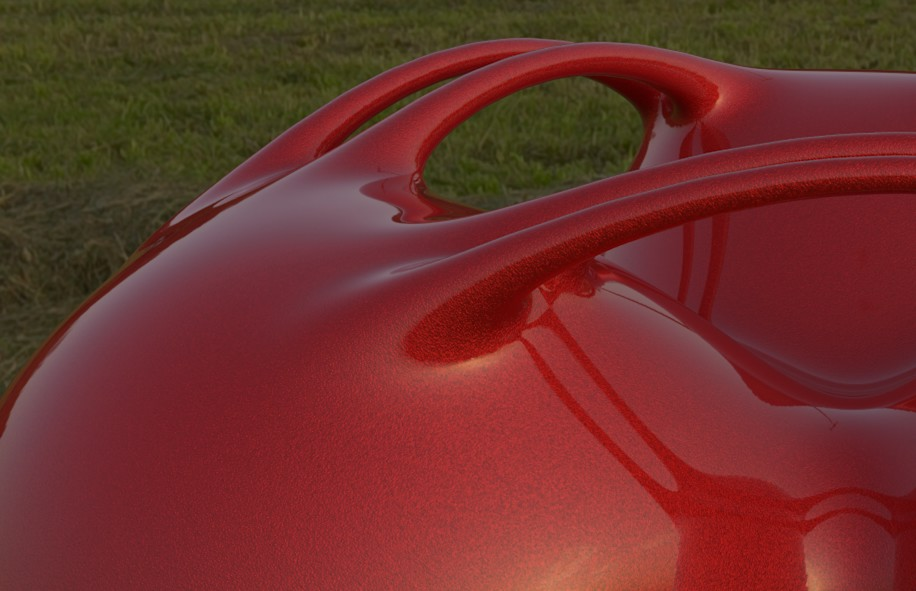

反射
概述
新的反射是之前版本的威力加强版。从 R16 版本起进行了如下修改：
- 因为属性相似，反射和高光通道被合并了。
- 反射/高光可以调整层顺序。
- 每个反射通道都有大量参数可供设置，其中许多在单独通道（如凹凸、法线等）或着色器（如菲涅耳反射）中也可进行设置。
- 许多属性现在都可以添加纹理了。
- 增加的新功能包括：多种反射模型、各向异性、织物、反射边缘的颜色溢出等。
简而言之，反射通道几乎可以实现任何反射效果。诸如汽车或金属漆这样的材质现在可以轻易地创建，它们是由多个反射效果不同的反射层所组成的。而且，还有许多预置材质可以用来创建各种真实的反射金属表面。
与之前版本的其他差别
反射通道与普通的材质系统多少有一定区别：
传统材质有：
- 颜色通道，反射真实光源（漫射）。
- 高光通道，反射真实光源（即使根据它的形状和强度并不能表现正确的效果）。
- 反射通道，反射环境。
对于创建材质来说，这三个通道是最重要的（其他通道基本只用来创建特殊效果或加强效果）。如你所见，这些通道都会产生反射，虽然它们的名称不同。
从 CINEMA R16 开始，这三个反射效果（以及每个层都有其独立的 Alpha、凹凸或法线通道）被整合为了一个单独的通道（但是仍然可以使用之前的工作流，所有之前版本的功能都仍然被保留：参见下面的提示）。因此，现在只用一个反射通道就创建材质了，这也意味着在一些情况下不需要颜色通道了。当然，也不能一概而论。
一方面，之前的版本对于如车漆、层叠高光这样的特殊效果很难实现，而用现在的反射通道则很容易。另一方面，全局光照的功能基于颜色通道的设置（而不是反射通道），因此不能不使用颜色通道。另外，真实的漫反射渲染比使用颜色通道来生成要复杂得多。
旧版本的材质仍然可以加载，高光和反射设置会保留，它们的层名称分别为“高光-标准”和“反射-标准”，得到的渲染效果几乎与之前相同（哑光反射上可能会有轻微不同）。因此可以在这两个层中进行与之前一样的操作，它们的类型分别为反射（传统）和高光 - Blinn/Phong（传统）。哑光效果现在可以用粗糙度进行设置。
如何创建金属材质外观？
下面用一个带有两个层示例来说明：一个透明涂层叠加在金属闪光效果上。
- 创建一个新材质，进入颜色通道并设置颜色，如暗红色。
- 切换到反射通道的层标签，双击默认高光（双击层名称而不是双击标签），将其命名为“Metallic”。设置层的类型为 Beckmann。
- 现在要添加小金属闪片到这个层。打开凹凸强度设置菜单（小黑色三角形），设置模式为自定义凹凸贴图，在自定义纹理框中添加一个噪波着色器，而不是加载纹理。
- 小全局缩放值与模度噪波类型组合的效果最佳。金属效果可以通过适当增加低端修剪值来增强。
- 切换回反射通道的 Metallic 标签，设置反射强度为 100%。
- 在层颜色菜单中，将颜色设置为接近颜色通道的颜色，但是要稍亮一些。这样就完成了第一层。
- 返回层标签，然后点击添加…按钮添加一个新的 Beckmann 层。双击这个层的名称将其重命名为“Clearcoat”。
- 切换到层菲涅耳菜单，设置菲涅耳为绝缘体。设置预置为玻璃。完成。如果现在渲染对象（包括置于天空对象的 HDR 图像），会得到下面的结果：
反射环境的金属车漆。
在哪里添加颜色、凹凸和高光纹理？
通常可以设置单独的颜色、凹凸或高光贴图。
加载方法如下：
- 正常加载颜色纹理到颜色通道中（纹理）。
- 加载凹凸纹理到凹凸强度菜单的自定义纹理框中（自定义凹凸贴图模式）。
- 添加高光贴图到层颜色菜单的纹理框中。
如果想要得到最好的凹凸纹理效果，可以将凹凸强度模式设为自定义法线贴图，把贴图加载到自定义纹理框中。
层标签
这里显示了当前选择材质的反射层列表。每个层都可以设置层名称、重新排列层顺序（按住
最多可以设置16层。当创建新材质时会默认创建默认高光层，它对应 R16 之前版本的高光通道（通过点击添加…按钮并选择可用的类型来添加反射层）。
如果启用了透明通道，反射通道的层标签中会显示* 透明度 *层（对于全内部反射，这个层会控制全反射的设置）。
需要多少个层？像现实世界一样多。例如，假设一个对象有金属车漆和透明涂层，那么它的材质就需要一个表现金属表面的各向异性反射层，还要一个轻微反射效果的透明涂层。它们可以像真实世界中的那样叠加——从底到顶。
点击这个按钮可以添加一个新层，这时会弹出一个菜单，从中选择类型。如果不想要各向异性效果或编织品质感，可以选择 Beckmann 选项。详情请点击前面的链接。
点击这个按钮会从列表中移除当前选择的层。
使用这两个按钮可以复制和粘贴层，包括层的所有设置。
在层上点击右键会弹出菜单，其中有以下命令：
复制选择的层为一个新层，并将其置于列表顶部。
点击层左侧的眼睛图标可以开关该层。双击层名称可以对其重命名。
层名称右侧的选择菜单可以让你在两种模式之间选择：
- 普通：为所有反射层选择这个模式。右侧的滑块可以调节层不透明度。设为 100% 会完全覆盖下面的层。例外：启用遮罩或菲涅耳会让底下的层穿透显示出来。
- 添加：如果高光层是唯一的，请选择这个模式（多个高光可以堆叠）。右侧的滑块可以调节层不透明度。
与每层可以单独设置的反射强度相比，全局反射亮度设置规定了所有反射的强度。例如你创建了一个复杂的多层反射，每个反射都有其自己的反射强度，但是在渲染时整体的反射太过强烈，这时就可以用这个滑块调低反射强度而不同单独调节每个反射设置。
与全局反射亮度设置可以调节材质整体反射类似，全局高光亮度设置同样可以调节高光亮度。
这个选项在与多通道（参见这里）一起使用时很有用。如果想要在分离通道中输出指定的材质，可以启用这个选项。
首先，这个选项只有在打开使用 CINEMA 4D R16 版本创建的工程时才会出现，之后这个选项将会被禁用。出现这种情况的原因是 R16 版本中的 BUG，反射通道中的纹理不会正确地计算（sRGB 替代线性）。这在新版本中会自动进行。这个选项会可以保证旧工程文件的渲染与新文件一致（然后选项会被禁用）。
其他标签
预览显示了当前层的设置效果。从左至右：
- 层预览：显示层设置的整体效果。
- 关于表面法线（与摄像机视角的夹角在0°到90°之间）的反射和高光强度衰减。
- 显示各向异性高光的变形和方向。它和接下来的两个预览只有在类型设置为各向异性，以及 划痕为主级+次级时才会显示。
- 主级 划痕
- 次级 划痕
- 当类型为Irawan（织物）时设置的图案。
- 当启用距离减淡时的反射衰减。
下面的光照图示说明了光线在不同的表面上是如何反射的，它与光线的入射角和反射角相关（原则上，这是一种确定 BRDF 双向反射分布函数的经验方法）。
光线的散布是非镜面反射的结果。如果是镜面反射（粗糙度设为0%）则这些类型不会有任何效果。
下面的内容不会讲解每种类型背后的理论，因为这涉及到很多的数学方面的内容。我们会让解释易于理解：
- Beckmann、GGX、Phong、Ward：这几种类型只在从理想反射角度（=入射角）均匀地减弱反射的方式上有所不同，基本上有上图中类型 A 和类型 B 的区别。仔细查看不同类型的渲染示例图片也只能看到非常细微的不同。 Beckmann 是一种物理真实而且快速的类型，因此在一般情况下是最佳的选择。GGX 的散布效果最好，在模拟金属表面时效果最好（参见上面的渲染效果图，第二行第二列）：亮度逐渐收缩的高光。Ward 最适合如橡胶或皮肤这样的柔软表面。
 真实世界反射模型（© Eric Smit）中的四个最重要的类型，粗糙度为60%。
真实世界反射模型（© Eric Smit）中的四个最重要的类型，粗糙度为60%。- 各向异性会按特定方向反射光束，这会产生变形的反射，例如涂刷或有划痕的金属。
- 反射（传统）, 高光 - Blinn/Phong（传统）：这三种类型只有在需要兼容旧版本工程文件时才会使用。推荐使用物理正确的反射类型。在使用高光 - Blinn/Phong（传统）时，可以自由地调整高光（而不用考虑粗糙度）。
- Lambertian（漫射）、Oren-Nayer（漫射）：这两种类型在漫射模型（即完美的非镜面反射）上多少有些不同。它们会产生类似颜色通道的效果（不发生反射）。在使用时要注意，它们不会被全局光照的辐照缓存所缓存，也是只有在有兼容性需求时才会使用。作为替代，应该使用颜色通道，因为渲染速度更快。
这个菜单的选项是用来与颜色通道一起使用的：
这些选项决定了颜色通道在各种的反射强度设置下要如何与层颜色（子菜单层颜色）进行混合。如果没使用颜色通道，那么这些设置不会有任何效果！还需要注意的是，如果使用了旧版本的高光类型，则只有旧版本支持的类型可用（添加和金属）。
在真实世界中，颜色通道的效果在表面的反射性增加时减弱，这在添加模式下会完全被忽略。
- 平均：两个颜色会被平均计算。如果层颜色中没有设置颜色，这个模式与下一个模式最大没有区别。这个模式会产生最真实的效果。
- 最大：这个模式最适合创建有颜色的反射：颜色通道的效果会减少，层颜色会成为主导。
- 添加：两个颜色会相加（物理上不正确，必须手动调暗颜色通道）。
- 金属：在需要兼容旧版本 CINEMA 4D 工程文件时才会使用，（在旧版本 CINEMA 4D 中，你可以在高光通道的模式设置中找到它，它会使用颜色通道中的颜色给高光着色。）
在真实世界中，物体表面是由无数微小的反射面所构成的，它们各自有不同的方向，当从一定距离观察时，会产生高光或反射。
一个完美的抛光（反射）表面是由方向相同的反射表面组成的。表面越粗糙，微小表面的方向就越随机，产生的高光也就越分散、越暗淡。当粗糙度为100%时就会变成类似 Lambertian 的材质（参见上面的描述）。这种类型的表面会在朝所有方向反射光线，构成良好的漫射材质表现。这也是颜色通道中所定义的：一种没有反射性的漫射材质。你完全可以无视颜色通道，使用层颜色来控制漫射材质颜色（但是会花更多时间来渲染）。
注意，粗糙度越高，渲染时间也就越长，因为要计算更大反射范围内的反射。
各向异性（见下文）可以用来减少微小反射面的随机性。
对于高光和各向异性，粗糙度要大于 0%。
可以将之前描述的纹理设置应用到全部纹理。这里加载的纹理灰度值会产生如下效果：白色表示参数设置为最大值，黑色表示设置为 0，灰色则会根据其亮度产生相应的效果。
这项设置决定了材质反射的强度。上面提到的衰减设置则决定了反射强度与颜色通道的混合方式。
一般来说，材质的颜色会随着反射强度的增加而减弱（这会出现在除了添加外的所有衰减模式下）。
如果反射强度设为 0%，则材质完全不会反射；如果设为 100%，反射效果最强。真实世界中的每种材质都会有一定程度的反射，即使反射量很小。在创建真实材质效果时请记住这一点。
多个反射层的反射强度组合可以使用层标签中的全局反射亮度滑块一起进行调节。
可以将之前描述的纹理设置应用到全部纹理。这里加载的纹理灰度值会产生如下效果：白色表示参数设置为最大值，黑色表示设置为 0，灰色则会根据其亮度产生相应的效果。
若启用，颜色通道中设置的颜色会用作反射颜色（通常反射色是由层颜色子菜单中的颜色设置决定的）。
这项设置决定了高光的强度。高光是一个（简化的、而且渲染快速的）将反射添加到材质而不需要额外渲染时间的处理方式。在真实世界中，高光只是光源在物体表面的反射，如果想要创建照片级真实的场景，可以将高光强度设为 0 而只使用 反射强度。
高光的尺寸和外观（除类型 = 高光 - Blinn/Phong（传统）外）取决于类型，大部分模型中粗糙度必须大于 0%，在一些情况下各向异性也是如此。这与 R16 之前的版本有所不同，之前可以对高光进行不真实的高度和宽度设置。如果有需要的话，在新版本中仍然可以这样做：将类型设为高光 - Blinn/Phong（传统）。
场景中的每个光源都会产生高光。注意，高光只能通过真实 CINEMA 4D 光源和区域光（但是与真实的区域光反射在尺寸和其他方面有所不同）产生：
注意看右图中小区域光在地面上的反射变得很大，看起来很不真实。注意这两个光源选项在高光中显示和反射可见，可以单独给每个光源进行设置。
查看上面的类型渲染示例，显示了不同类型和粗糙度设置之间的差别。
多个反射层的高光强度组合可以使用层标签中的全局反射亮度滑块一起进行调节。
可以将之前描述的纹理设置应用到全部纹理。这里加载的纹理灰度值会产生如下效果：白色表示参数设置为最大值，黑色表示设置为 0，灰色则会根据其亮度产生相应的效果。
若启用，颜色通道中设置的颜色会用作高光颜色（通常高光色是由层颜色子菜单中的颜色设置决定的）。
CINEMA 4D 高光设置
以下三项设置只会出现在高光 - Blinn/Phong（传统）中：
这项数值决定了高光的宽度。对非镜面反射可以设置较大的宽度（较小的高光强度）。抛光表面的宽度则应该很小（较大的高光强度）。
可以将之前描述的纹理设置应用到全部纹理。这里加载的纹理灰度值会产生如下效果：白色表示参数设置为最大值，黑色表示设置为 0，灰色则会根据其亮度产生相应的效果。
衰减值决定了高光的亮度曲线，从针形到钟形或矩形都可以设置。
可以将之前描述的纹理设置应用到全部纹理。这里加载的纹理灰度值会产生如下效果：白色表示参数设置为最大值，黑色表示设置为 0，灰色则会根据其亮度产生相应的效果。
这项数值决定了高光的内部宽度，它不会受到亮度衰减变化的影响。
可以将之前描述的纹理设置应用到全部纹理。这里加载的纹理灰度值会产生如下效果：白色表示参数设置为最大值，黑色表示设置为 0，灰色则会根据其亮度产生相应的效果。
凹凸/法线通道
每个反射层都有自己的，且自控的凹凸和法线通道（它们的功能与同名的材质通道类似）。
反射层凹凸通道的一个常见用途是创建金属车漆中的闪片，这些反射性的微粒是用非常小的噪波 纹理模拟出来的。
使用这个滑块可以调节凹凸效果的强度。如果设为 0% 则不会有凹凸效果；设为 100% 则效果最强。这个滑块也可以调节法线效果。
每个层通道都有自己的强度滑块，但是它们的作用方式不同（例如，凹凸贴图的强度滑块还可以使用负值）。
可以将之前描述的纹理设置应用到全部纹理。这里加载的纹理灰度值会产生如下效果：白色表示参数设置为最大值，黑色表示设置为 0，灰色则会根据其亮度产生相应的效果。
这项设置定义了要使用的凹凸或法线通道的类型（没有指定反射层通道）。
如果想要使用自定义的凹凸贴图可以选择这个模式，将贴图加载到自定义纹理框中。也可以加载法线贴图（使用下一个选项；在法线着色器中也可以使用凹凸贴图）得到更好的效果。
如果想要使用自定义的法线贴图可以选择这个模式，将贴图加载到自定义纹理框中。
在这里加载自定义凹凸或法线贴图。
这两个数值决定了凹凸/法线贴图的强度。详见下面的强度（凹凸）和强度（法线）。
启用这个选项会减少凹凸贴图在相机方向上的深度（参见MIP 衰减）。
这项设置定义了法线贴图的坐标系统。更多信息参见算法。
翻转 X（红）
翻转 Y（绿）
翻转 Z（蓝）
交换 Y 与 Z （Y 向上）
这些选项用来设置哪个坐标轴使用什么颜色。更多信息参见翻转 X（红）。
层颜色
这个菜单的设置类似一个反射的颜色滤镜。层颜色和材质颜色通道的颜色会相加。这种方式让你可以使用黑白纹理来设置哪里需要反射（白色=反射，黑色=不反射）。
还可以在创建有色金属表面时使用层颜色。
设置层过滤器的颜色。默认颜色为白色，这时反射光不会改变颜色。
使用该设置来调整通道颜色的亮度。亮度可以看作是一个乘数，并且可以设为大于100%。
可以在这里设置一张纹理贴图或一个2D着色器。详情参见纹理。
这些参数会影响颜色和贴图的混合。所有通道的默认模式都是标准，除了环境通道的默认混合模式是正片叠底。不是所有通道都有混合模式。如果加载了贴图或2D着色器，它会位于颜色的上一层。
混合强度决定了贴图和颜色的混合比例。
层遮罩
This menu’s settings can be used to create an alpha channel for a layer that defines the visibility of the layer beneath it. White will not hide anything, black hides all, grayscale values hide accordingly.
使用该设置来调整通道颜色的亮度。亮度可以看作是一个乘数，并且可以设为大于100%。
This setting is used to define the color of the alpha. The default color is white, which allow reflections without having to modify the color.
可以在这里设置一张纹理贴图或一个2D着色器。详情参见纹理。
这些参数会影响颜色和贴图的混合。所有通道的默认模式都是标准，除了环境通道的默认混合模式是正片叠底。不是所有通道都有混合模式。如果加载了贴图或2D着色器，它会位于颜色的上一层。
混合强度决定了贴图和颜色的混合比例。
层各向异性
Anisotropic effects are produced when many fine microscopic scratches are oriented in a specific direction on an object’s surface (as is the case with brushed metal, for example). Specular highlights and reflections will then be "dragged” in the direction of these scratches. In addition to microscopic scratches, larger ridges can also be created in the direction of the scratches.
To create an anisotropic effect, set 类型 to 各向异性, 粗糙度 and Anisotropy to a value greater than 0%. Also make sure that there is enough present in the environment to reflect. HDRI textures on a Sky object are well-suited for this. In case you’re wondering how the 各向异性 pattern is projected onto an object: this process follows the normal rules of projection. As a test, set Scratches to Primary - a corresponding preview will be displayed at the top of the 材质编辑器. Imagine this preview being projected as a texture.
The scratches’ vector tangents, that define the scratch direction internally, can be projected onto an object in one of two ways:
- None: Vectors will be projected onto the object without modification
- Planar: Vectors will be scaled, rotated and moved
- Radial: Vectors will be curved circularly, e.g., to simulate the look of the disc in the image above. An image can be loaded into the Pattern field, Offset values can be increased and Count can be varied to create all kinds of interesting spiral/symmetrical effects but the effect in the example above can only be created without using the Pattern setting.
This value defines the size of the Pattern or Scratches selected.
This setting is used to rotate the anisotropic microscopic scratches (and, if defined, the parallel ridges). The rotational axis is defined by the 偏移 U/V values.
偏移 U [-1000..1000%]
偏移 V [-1000..1000%]
These settings are used to move the Pattern/Scratches in the U and V directions, respectively. For the effect on the disc in the image above, both values were set to 50%, which means that the rotational axis lies at the center of the circular scratches.
When applying this setting, a Pattern should be selected first. The 计数 value then defines the number of ‘threads’ that converge at the center defined by the 偏移 U/V settings.
This setting can be used to create common anisotropic materials such as carbon, brushed metal, etc. In addition, textures can be used to create numerous other patterns.
Linear scratches whose orientation will remain constant will be created.
点阵和立方体 are well-suited for creating carbon fiber surfaces:
Instead of using a default pattern, you can also use a custom pattern. To do so, create a black texture with a white pattern on it.
Grayscale values will also be evaluated, whereby 最大角度 will represent the scratches’ angle at white regions. Note that you will not see the difference if a scratch is rotated 180°.
This setting offers options that let you mirror the Pattern in the U and or V directions (with the exception of Custom patterns).
Besides anisotropic microscopic scratches that can uniformly deform specular highlights/reflections, additional, even larger ridges can also be defined. There are primary ridges that run parallel to the microscopic scratches and secondary ridges (these make less sense in conjunction with 重投射 Radial) that run in a perpendicular direction. Both ridge types can be applied simultaneously, as shown at the top right of the image above.
Use this value to define the over strength of the anisotropy effect. A value of 0% will disable the effect.
可以将之前描述的纹理设置应用到全部纹理。这里加载的纹理灰度值会产生如下效果：白色表示参数设置为最大值，黑色表示设置为 0，灰色则会根据其亮度产生相应的效果。
This setting is a little more difficult to comprehend than the others. It regulates a property that does not actually exist in the real world: it rotates the vector tangent scratches mentioned above. What effect does this have? It changes the reflective behavior. This makes it possible to fine-tune the anisotropy effect without having to change the position of the light source.
可以将之前描述的纹理设置应用到全部纹理。这里加载的纹理灰度值会产生如下效果：白色表示参数设置为最大值，黑色表示设置为 0，灰色则会根据其亮度产生相应的效果。
主级振幅 [0..10000%]
次级振幅 [0..10000%]
纹理
纹理
These values are used to define the ridge depth. Note that you can also enter values in excess of 100% to create very deep ridges.
可以将之前描述的纹理设置应用到全部纹理。这里加载的纹理灰度值会产生如下效果：白色表示参数设置为最大值，黑色表示设置为 0，灰色则会根据其亮度产生相应的效果。
主级缩放 [0..10000%]
次级缩放 [0..10000%]
纹理
纹理
These settings are used to define the ridge width.
可以将之前描述的纹理设置应用到全部纹理。这里加载的纹理灰度值会产生如下效果：白色表示参数设置为最大值，黑色表示设置为 0，灰色则会根据其亮度产生相应的效果。
主级长度 [0..10000%]
次级长度 [0..10000%]
纹理
纹理
These values are used to define the ridge length. Very high values lead to concentric (radial) or long ridges with a uniform depth (Planar), very small values lead to very short ridges.
可以将之前描述的纹理设置应用到全部纹理。这里加载的纹理灰度值会产生如下效果：白色表示参数设置为最大值，黑色表示设置为 0，灰色则会根据其亮度产生相应的效果。
主级衰减 [0..10000%]
次级衰减 [0..10000%]
纹理
纹理
These settings are similar to MIP Mapping for calculating ridge patterns based on their distance from the UV dimensions. In essence, they control the smoothing of the ridges. Small values produce more grainy but faster results and larger value produce correspondingly more blurred and slower results. Note that very large values can be entered here.
可以将之前描述的纹理设置应用到全部纹理。这里加载的纹理灰度值会产生如下效果：白色表示参数设置为最大值，黑色表示设置为 0，灰色则会根据其亮度产生相应的效果。
层布料
Cloth is most often made of yarn (and this in turn from fibers) that are woven to create a certain pattern. They are made up of structured surfaces that produce characteristic anisotropic specular highlights/reflections. This is why Cinema 4D has its own cloth mode - Irawan（织物） - which can be selected in the 类型 menu.
The material channel Color can be disabled in conjunction with this mode.
Here you will find a selection of presets with pre-defined values for each respective weave pattern.
The following presets are available:
If a preset’s settings are changed, it will automatically switch to Custom mode.
Woven cloth is made up of various warp and weft threads that are woven perpendicular to each other. When viewed close up, the Cinema 4D weave patterns look like this:
When viewed from a distance, these structures blend to form a characteristic cloth, which looks slightly differently, depending on the angle from which it is viewed. This isn’t surprising considering the fact that, in reality, warp and weft threads are made up of different yarn with different reflective properties. Polyester: for example, lining is made of very shiny elements that lie perpendicular to each other and have strong reflective properties (as can be seen at the far right of the image above).
Internally, the reflective behavior of the weave pattern is treated like a procedural texture with a strong noise property (analog to the Noise shader, this would reflect a small scale value). When rendered, this texture will be evaluated using various small samples. The three quality levels available here are used to adjust the sample count. The effect this has on render quality is minor (although it has a huge effect on render time) if you do not use the Low option, which is designed for creating test renderings.
The better the antialiasing settings, the less the Quality setting will affect render quality.
The higher the quality, the sharper the cloth structure will be the more the Moiré pattern is reduced.
This setting can be used to rotate the cloth structure (rotational axis U/V=0/0). For example, if a pant leg’s pattern lies perpendicular to the leg, this setting can be used to correct this state. Depending on the weave pattern, even small modifications (e.g., 10°) can have a major effect on the rendered result. It’s a good idea to experiment with this setting a little.
可以将之前描述的纹理设置应用到全部纹理。这里加载的纹理灰度值会产生如下效果：白色表示参数设置为最大值，黑色表示设置为 0，灰色则会根据其亮度产生相应的效果。
缩放 U [0..100000%]
缩放 V [0..100000%]
纹理
纹理
These settings can be used to vary the cloth structure in U and V directions. Normally, the scale values should be the same in both directions to correctly reproduce the cloth’s structure. However, these values can also be made to differ in order to achieve a special look.
Note that very large values will produce correspondingly unrealistic-looking results.
可以将之前描述的纹理设置应用到全部纹理。这里加载的纹理灰度值会产生如下效果：白色表示参数设置为最大值，黑色表示设置为 0，灰色则会根据其亮度产生相应的效果。
The Highlightt Width setting defines the ‘width’ of the specular highlight/reflection. Smaller values produce sharp, bright highlights on individual threads; larger values will soften the highlights accordingly (they will become correspondingly darker and more expansive).
可以将之前描述的纹理设置应用到全部纹理。这里加载的纹理灰度值会产生如下效果：白色表示参数设置为最大值，黑色表示设置为 0，灰色则会根据其亮度产生相应的效果。
径向漫射
纬向漫射
径向高光
纬向高光
纹理
纹理
纹理
纹理
These color settings can be used to define separate diffuse and specular colors for the warp and weft threads (see Cloth Pattern).
Make sure that the specular color is always brighter than the diffuse color and that they have a similar tone. A shader or bitmap can be loaded into the Texture field to define the color. Note that the texture will be multiplied with the respective color. If you only want to use the texture to define the color, then set the color for that setting to white.
This setting is for use with the Polyester and Silk Pattern options only. Generally speaking, the anisotropic specular highlight becomes more blurred - but brighter - with increasing values.
This setting defines the overall specular/反射强度. The larger the value, the brighter/more reflective the cloth will be.
This setting can also be used to adjust specular/highlight strength - but larger values will produce correspondingly smaller effects. More importantly, this setting primarily affects the bright regions of the yarn’s specular highlight and the darker regions will hardly be affected.
噪点
Since just about every cloth has irregularities in its threads and its weave, Cinema 4D offers 3 Noise methods that can be used to simulate such irregularities in cloth:
- Yarn color using 噪点强度
- Shape/orientation of the warp thread’s specular highlight using 纱线噪点（径向）
- Shape/orientation of the weft thread’s specular highlight using 纱线噪点（纬向）
This setting is used to define the strength of the noise applied to the yarn’s color (the thread color will be brightened and darkened in other regions).
This setting is used to define the scale of the noise applied to the yarn’s color. Note that very large values can be used, which will produce a correspondingly spotty cloth.
纱线噪点（径向） [0..100%]
纱线噪点（纬向） [0..100%]
These settings are used to define the strength with which the internal noise affects the shape and size of the specular highlight (see also image above). The larger the value, the greater the deviation from the parallel thread position and the more the look of the cloth will change - e.g., from a silky surface to a rough canvas-type surface.
This setting is used to define the scale of the noise effect. The smaller the value, the faster the deviation from the optimal shape will be. Larger values will slow deviation correspondingly, exactly like scaling a Noise shader.
层菲涅耳
These setting are used to define the degree to which the reflection will increase as the surface normals increase their angle to the surface, which is referred to as Fresnel reflection, which should already be familiar to you from the Fresnel-Shader section, which principally works the same.
Make sure that the reflectance strength is greater than 0. Otherwise no Fresnel effect will appear.
You can select from:
- Dielectric for transparent materials such as glass, water, clear coat lacquer, etc.
- Conductor for 不透明, reflective materials such as metal, minerals, etc.
Make sure that the material channel Color is disabled for more realistic-looking results. Metal surfaces use reflections almost exclusively.
A series of presets (primarily for metals) is integrated that are based on real-world values. These cannot be modified individually using the Fresnel settings described below.
Different materials will be made available for selection depending on the Fresnel mode selected. Select Custom if you want to modify the settings yourself.
Note that the Conductor presets will affect the internal color system (the 层颜色 (层颜色) should be 100% white!).
The Strength setting is used to define the reflections strength between 0% and 100%.
The 纹理 setting can be used to apply the previously described setting to an entire texture. The grayscale values of the texture loaded here control the setting as follows: white represents the setting’s full value and black = 0. In-between gray values have a corresponding effect.
折射率（IOR） [1..100]
折射率（IOR） [0..100]
纹理
纹理
The IOR is mentioned mainly in conjunction with refractive light effects but it is also a measure for the angle of incidence for a material’s light reflections (regardless if it’s transparent or 不透明). As you can see in the image above, low values cause the material to reflect almost exclusively in regions at which the camera’s angle of view is extremely low. Larger values cause the reflection to move correspondingly more to the frontal regions.
The Conductor mode behaves similarly (however, the increase in reflection that corresponds to the increased IOR is not linear because it is also affected by the 吸收 value; it is recommended that you use the preset values to achieve a higher degree of realism) but the reflections are generally much more pronounced.
The Strength slider can be used to seamlessly move from reflection (0%) to full Fresnel reflection (100%).
可以将之前描述的纹理设置应用到全部纹理。这里加载的纹理灰度值会产生如下效果：白色表示参数设置为最大值，黑色表示设置为 0，灰色则会根据其亮度产生相应的效果。
Enable this option to invert the Fresnel reflection. Example (on a sphere): the maximum reflection that is normally at the sphere’s center will be switched to its edges.
In some cases you might want to prevent the Fresnel effect from neighboring surfaces from affecting a given object. In the image above, a reflective surface with an alpha map lies on top of a red, diffuse layer. The 不透明 option is disabled at the left: note how the red color from the underlying layer shines through while it is blocked on the right side of the image where the 不透明 option is enabled.
This setting is only available for the Conductor mode. Increasing values will produce correspondingly stronger overall reflections. This setting can be used to fine-tune the degree of reflection.
可以将之前描述的纹理设置应用到全部纹理。这里加载的纹理灰度值会产生如下效果：白色表示参数设置为最大值，黑色表示设置为 0，灰色则会根据其亮度产生相应的效果。
层采样
This setting is designed for use with the Standard Renderer only (i.e., not the Physical Renderer). It can be used to define the quality of matte reflections.
Larger values will slow rendering and increase quality correspondingly.
It can occur that a reflected HDR image/sky can produce extremely bright points (fireflies) on a third object - i.e., a reflection of a reflection. To prevent the sampling settings from being increased dramatically, this setting can be used to limit the intensity of this reflection. The higher the value, the more the intensity of the reflection will be restricted, thus reducing this effect.
This is a threshold value that defines the degree to which weak reflections will be calculated, if at all. Let’s say you have a Project with numerous reflective objects. An object at the rear of the image that is reflected in a small object near the front can be omitted because its role in the overall image is so small. The smaller this value is, the more reflections that will be ignored. The image below is an example of how this setting can be applied (the very bright HDR image helps make the effect more pronounced):
A sphere with a Fresnel reflection reflects a HDRI sky. The 切断 value on the left is too large; the corrected value is on the right.
A reflection depth can be defined in the Preferences menu that defines the number of reflections that should take place. For example, if you have two mirrors facing each other, this setting can be used to limit the number of reflections that take place. Otherwise an endless number of reflections would be rendered with a more-or-less endless amount of render time. The 出口颜色 setting defines the color the reflection should assume in the end. In previous versions of Cinema 4D, this was black by default. However, as you can see in the image above, this produced unwanted black spots. This can be avoided if a fitting color is defined for the last reflection, as can be seen in the image above).
Reflections can be split for Multi-Pass rendering so that only certain materials are output in 分离通道. To do so, this option must be enabled (details can be found here).
距离减淡
距离 [0..10000000m]
衰减 [-1..1]
Contrary to what the real world, this setting can be used to omit objects from a material’s reflection depending on their distance from that material. If 距离减淡 is disabled, all objects will be reflected. If enabled, the Distance value defines the distance at which an object will no longer be reflected. The reflection falloff up to the Distance value is defined using the 衰减 value. A value of 0 produces a linear falloff; other values produce the effects shown in the example above.
The reflection of the Sky object was disabled because it is considered to be an endless distance away.
For this setting, imagine a sphere with a Distance radius around the reflective object. This sphere’s color is reflected when the reflection samples are longer than the Distance value defined. Normally, black would be the correct color in this case because it would prevent anything from being reflected. Other colors can be used depending on the intended result.
* 透明度 * 标签
A * 透明度 * will be added when the material channel 透明度 is enabled. This tab contains reflection settings, however without Color or Mask settings, among others. The settings in this tab let you control the inner total reflection’s reflective properties (which has not possible prior to R16).
Normally, these settings do not have to be modified. If you’re not trying to achieve a very unusual effect, these settings can be left as they are.
This tab cannot be copied or deleted.
The Total Inner Reflection must be enabled in the 透明度 channel and Refraction should be set to 0.